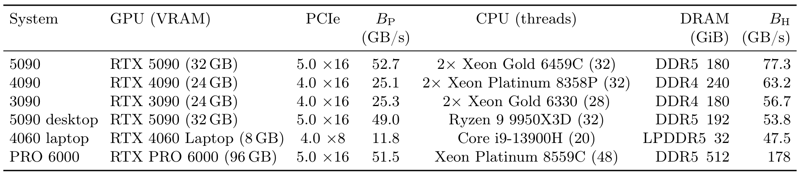

Figure 1: FreeToken serves the models on the cost–capability Pareto frontier, at interactive speed on consumer hardware.(a) Blended API list price (9:1 input:output mix, following the token economics measured on real coding-agent traces) versus Code Arena Elo for representative hosted models. Blue squares mark models FreeToken serves, tagged with the consumer GPU class that serves them; the frontier segment from DeepSeek-V4-Flash to GLM-5.2 is exactly this set.(b) Mean decode throughput on real agentic workloads for the strongest model each hardware tier holds, against actively maintained edge engines. The dashed line marks the median decode speed of Codex in production traces (33 tok/s); × marks configurations an engine cannot serve.
中文解读:左图(a)横轴是宿主 API 的混合价格(9:1 输入:输出),纵轴是 Code Arena 网页开发 Elo——越往下越便宜、越靠右越强,因此"又便宜又能打"的模型在右下方;蓝方块是 FreeToken 能在消费级 GPU 上原生跑起来的模型,它们恰好组成从 DeepSeek-V4-Flash 到 GLM-5.2 的前沿段:35B 级 → 4060 笔记本,284B 级 → 5090 台式机,753B 级 → RTX PRO 6000。右图(b)纵轴是解码速度,虚线是生产环境中 Codex 的中位解码速度 33 tok/s:FreeToken 在每个硬件档位都能超过或接近它,而其他引擎很多配置直接打 ×(跑不了)。这张图的论点:过去"便宜=弱"的假设被打破了——免费本地跑的模型就落在付费 API 的能力前沿上。
Figure 2: FreeToken overview. (1) Prefill: expert loading is double-buffered at full-layer granularity, streaming layer l+1 over PCIe while the GPU computes layer l; recurrent-state checkpoints are anchored at special-token boundaries, so a context edit resumes from the nearest surviving anchor and re-prefills only the new suffix. (2) Decode: most routed experts hit the shared LRU expert cache (here 8 of 12, following temporal locality). The m=4 misses are divided by q*=m·BP/BH between cache fills over PCIe (one expert) and in-place CPU execution (three), using bandwidths profiled on the deployed machine; the GPU and CPU partial outputs merge exactly. The host-resident expert pool remains the source of truth throughout.
中文解读:上半部分(1)展示 prefill:PCIe 加载层 l+1 的同时 GPU 算层 l(l 与 l+1 两个全层缓冲轮换);右侧是"语义锚点"——状态检查点(▲)钉在 special token 边界(thinking / response / tool call / tool output / answer)上,编辑后(✂ 删除块)从最近的幸存锚点恢复,只重 prefill 新后缀。下半部分(2)展示 decode:GPU 端 router 选 top-12 专家,其中 8 个因时间局部性在 LRU 缓存中命中;4 个缺失(m=4)按 q* = m·B_P/B_H 分配——本机实测 B_P:B_H ≈ 1:4,所以 1 个走 PCIe 填充(进缓存,将来可复用),3 个在 CPU 就地计算;GPU 部分输出 y_GPU 与 CPU 部分输出 y_CPU 精确相加合并成层输出 y。整张图强调:决策全部按"这台机器实测的带宽"来做,且输出合并是 exact 的、无近似。
💡 点击任意图片可查看原始高清大图,再次点击或按 Esc 关闭。
机制① prefill:全层双缓冲 + 语义感知状态缓存
全层双缓冲把搬运藏在计算后面。因为 prefill 每层几乎激活全部专家(§2.1),FreeToken 不做按需取专家,而是从全局槽位池申请两个"全层缓冲":GPU 用缓冲 A 算第 l 层的路由专家时,专用传输流同时把第 l+1 层的完整专家集灌进缓冲 B——整层传输不需要等路由结果,权重搬运在后台连续进行,缓冲再轮换。缓冲与 decode 缓存共享同一个槽位池,没有独立的 prefill 缓存、没有阶段交接,prefill 存活下来的条目直接给延迟敏感的 decode 阶段;槽位池腾不出两个整层时,回退到按需加载,绝不超订显存。
decode 时,GPU 上的 router 与缓存查找识别已在缓存中的活跃专家集合 H(直接在 GPU 执行);剩下的 m 个"唯一缺失专家" M 是难点。
语义感知专家缓存跟随模型的实际计算。跨步解码的路由有强时间局部性:同一层连续 token 反复路由到重叠/近期用过的专家(跨模型族被测量证实,Liang et al. 2025)。FreeToken 不用加载时的通用放置,而是维护一个全层共享的 LRU 驻留空间:命中刷新 recency、填充吸收新选中专家、驱逐最久未被模型需求的专家——稀缺显存持续跟踪当前生成的工作集。缓存消不掉所有缺失(冷启动、工作集突变、容量不足),这些残余缺失交给带宽自适应执行。
两块实测带宽决定缺失怎么服务。把 m 个缺失专家分成缓存填充集 F 与 CPU 执行集 C(M = F ∪ C,q = |F|):F 的专家搬进缓存槽、在 GPU 执行、之后留在显存复用;C 的专家直接在 CPU 常驻池里执行、不改驻留状态。两条路并发:缓存填充按满速 PCIe 走,CPU 只吃链路饱和后剩下的宿主带宽,把"残余带宽"变成当前 token 的进度,不挂起缓存更新。
最优拆分来自"残余带宽"论证。设单个专家字节数为 $S$。专家 DMA 与 CPU 执行读同一宿主内存子系统,PCIe 饱和后剩余带宽为:
这个单一公式覆盖所有硬件平衡:当 $B_H$ 逼近 $B_P$ 时 $q^*$ 逼近总缺失数 m,系统退化回"纯按需缓存填充",连独立执行分支都不需要。实践中四舍五入取整,具体选哪些专家进 F 交给缓存替换策略负责,且总是至少保留一次填充,让缓存即使在 CPU 扛大头时也在持续预热;两个带宽参数在部署时于目标硬件上实测。
执行顺序与精确性:CPU 支路先启动,随后 GPU 走缺失路径(缓存更新 → F 的批量拷贝 → 对合并集 G = H ∪ F 的分组评估),CPU worker 并发处理 C;层暴露延迟就是两条并发支路中较慢者——正是公式平衡的量。GPU 与 CPU 各自算部分和再合并,保留精确 MoE 输出,无算法近似。整套逐层控制流(缺失检测、集合定长、victim 选择、CPU 支路)被静态捕获进 CUDA Graph,§4.1 讲这套"图兼容"机制。
机制③ 弹性内存管理:显存只影响性能,不影响正确性
因为 CPU 常驻专家池是真相来源,GPU 内存的任何变化只动性能、不动正确性。两大机制:
运行时缓存重配置:非专家权重与运行时状态分配后,剩余预算在 KV 页与完整专家槽之间划分;划分不在启动时钉死,任何调度安全点都可以用修订后的预算重建 GPU 专家缓存,不重启引擎、不重载 CPU 池,动态重建已捕获的执行路径。
专家 bank 与 FTW 格式:把模型特有 checkpoint 布局归一化成少量专家 bank,每个 bank 以展平的"层-专家"ID(lE+e)为前导维;不同 bank 中同 ID 的行合起来 = 一个完整专家,GPU kernel 与 CPU 执行器共享同一逻辑专家身份。FTW(FreeToken Weight)格式提前把专家权重按运行时 bank 布局合并好;引擎启动时跳过张量发现与重打包,直接并行 direct I/O 读对齐块进精确尺寸的宿主 bank,填满后才 pin。
平台适配:加载时按专家表示/GPU 架构/CUDA 环境选 GPU kernel;CPU 执行器分发到可用 SIMD 实现与物理核布局。当完整专家池无法 pin/注册 DMA(某些 OS 与驱动限制),回退到纯 CPU MoE 后端:专家权重留在可分页宿主存储、全部路由专家 CPU 执行、非专家层留在 GPU,只有激活尺寸的输入、路由元数据、聚合输出跨 CPU-GPU 边界——用峰值传输带宽换"快速路径建不起来也能部署"。
06 · Evaluation
实验:4 个真实 agent 工作负载 × 6 台机器 × 4 个基线
设置
硬件:六台独显系统(Table 1)——五台消费机 + 一台工作站(RTX PRO 6000 Blackwell,96GB)。3090/4090/5090 是租的双路服务器,CPU 远超边缘主机,因此所有服务与带宽测量都限 6 个 CPU 线程并 pin 到 GPU 的 NUMA node;如此封顶后服务器给出 56.7–77.3GB/s 宿主带宽,与两台真边缘机自然全线程的水平同量级(台式机 16 核 53.8、笔记本 14 核 47.5);台式机与笔记本不加限制,验证模拟的真实性。所有带宽在部署张量形状上实测,不取自规格表。

Table 1: Test systems. BP is the measured host-to-device expert-transfer bandwidth over PCIe; BH is the measured effective bandwidth of the CPU-side MoE expert kernel. On the three rented servers the CPU-thread and DRAM columns give container quotas.
中文解读:B_P = 实测 PCIe 专家搬运带宽,B_H = 实测 CPU 侧专家 kernel 有效带宽。注意三台"服务器"是限核限带宽模拟出来的边缘主机;真实边缘机是 5090 desktop(Ryzen 9950X3D, DDR5)与 4060 laptop(LPDDR5)。B_P:B_H 从 5090 服务器的 52.7:77.3 ≈ 1:1.5 到 4060 笔记本的 11.8:47.5 ≈ 1:4,横跨整个天平——这正解释了为什么"固定一种分流策略"行不通、q* 必须在真机上测。PRO 6000 有大内存(512GiB DDR5)与高 B_H(178GB/s),支撑 753B 级演示。
Figure 4: (a) Prefill TPS versus prompt length (RTX 5090, Qwen3.6-35B BF16), with and without FreeToken's pipelined full-layer loading. (b) Decode-time expert miss rate versus cache size (as a percentage of the expert pool) under the three engines' placement policies, replayed on identical routing traces; lines are means over W1–W4, bands the min–max range.
中文解读:左图(a)prefill 吞吐随 prompt 长度变化:1k→16k token,FreeToken(实线)基本贴着传输上限,2k 以后明显甩开"关闭重叠"版本与 KTransformers/llama.cpp/Ollama;4k 起差距拉开到 2–3 倍,印证"整层双缓冲把搬运藏进计算"的价值。右图(b)两条子图分别是 Qwen3.6 与 DSV4-Flash 的 decode 专家缺失率 vs 缓存容量(占专家池百分比,带 min–max 带状):三条策略曲线从下到上永远是 FreeToken(LRU)< KTransformers(Prefill Update)< llama.cpp(Static),容量越小差距越大——静态放置接不住路由流量,LRU 跟随工作集。
Figure 5: Coding-agent decode TPS across consumer GPUs (SWE issues via the OpenCode harness), Qwen3.6-35B-A3B. 4060 laptop using NVFP4, the other Qwen3.6 columns BF16. The RTX PRO 6000 column is a separate demonstration: GLM-5.2 (753B-A40B, NVFP4) on the math workload; Ollama is not run there. × marks configurations an engine cannot serve.
中文解读:横轴六根柱:4060 笔记本(8GB,最弱)→ 3090 → 4090 → 5090 服务器 → 5090 台式机 → RTX PRO 6000(跑 GLM-5.2,单独演示)。FreeToken 在每根柱都最高:台式机档 50+ tok/s,4060 笔记本也到 ~39 tok/s 超过 33 tok/s 的生产 Codex 中位线;llama.cpp 与 KTransformers 在 4060 笔记本上直接打 ×(跑不了),4090 以后才陆续能跑。也就是最需要它的机器上,基线反而缺席。